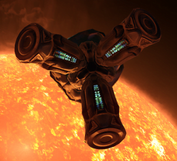

The Unknown Artefacts as they were known back then were first found in 3301 within Military Threat 4 convoys are believed to be of alien origin, and are biological in nature. They scan any ship within 1km and were highly speculated to be related to the Thargoids, as of now, we can confirm this.
Video: Obsidian Ant introducing the Unknown Artefact/ Thargoid Sensor
The Thargoid Sensors were found in 3301. Many believed at the time that they were of alien and potentially Thargoid origin, this was confirmed in 3303 with the return of the Thargoids. The objects; biological and organic in nature appear to scan your ship when you come in range to them (1000m / 1km). They also when jettisoned into space orientate themselves to face the Merope system. Where the first Barnacle was found.
TSs broadcast a complex audio signal. Part of the signal has been decoded. It is a highly stylized Morse code transmission consisting of blocks of 6 letters. When each pair of letters is taken as coordinates and each block is interpreted as a triangle the resulting diagram is a primitive drawing of the just scanned (i.e. your) ship. An example of this can be seen below:
The Thargoid Sensor is also fairly dangerous. As like it’s more recent cousins the Thargoid Probe and the Thargoid Link. it causes corrosive damage to your ship which can be fatal if you have it in your hold for a long duration of time, or you have more than 1. The Thargoid Sensor as with the Thargoid Probe and Thargoid Link will also begin to degrade in space if left for a long duration, this will end up destroying it.
The Thargoid Sensor used to have the ability to shut down stations, when sold to a black market (this was known as ‘UA Bombing’ as Thargoid Sensors were initially known as Unknown Artefacts). The only known way to repair and bring a station back online was with Meta Alloys which can be found at ripe Barnacle sites and can be bought at Darnielle’s Progress in the Maia system. This ability was neutralised due to advances from Aegis research announced in Galnet on 29 NOV 3304.
Canonn have created a tool UA Morse Drawer to allow you to decode or create your own messages as used in Project Mercury in an attempt to communucate with the Thargoids.
Thargoid Sensors can be found within a 135-150ly radius around the Merope system. This has come to be known as the UA shell ( Unknown Artefacts being their name at the time). They can be found within Non-Human Signal Sources – Threat 5 are the most reliable. Be aware if there is an active Thargoid in the signal source, it may attack if you pick it up.
Our recommendation is that if you don’t find a Thargoid Sensor (in a system that is the correct distance from Merope) within 10 minutes then try another system.
Thargoid Sensors are more easily found at the Thargoid crash site, ( Crash 3 ) scattered around the area. You can also find Thargoid Sensors (and Thargoid Probes) in Wrecked Megaship cargo bays, though this is less reliable than the crash site. In the bubble a Thargoid Sensor has been reportedly found at a crashed anaconda in Skeggiko O on planet B 8.
